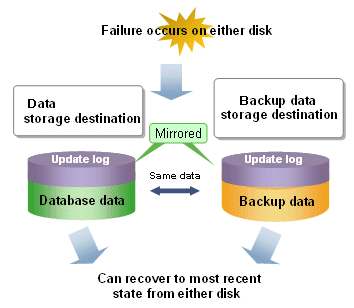
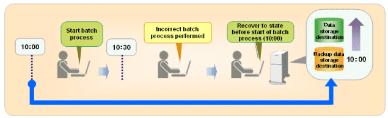

Threats such as data corruption due to disk failure and incorrect operations are unavoidable in systems that use databases. The ability to reliably recover corrupted databases without extensive damage to users when such problems occur is an essential requirement in database systems.
FUJITSU Enterprise Postgres provides the following recovery features that flexibly respond to this requirement:
Media recovery, which recovers up to the most recent point in time
Point-in-time recovery, which can recover up to a specific point in time
Backup/recovery that can integrate with various copy technologies
Media recovery, which recovers up to the most recent point in time
When a disk failure occurs, media recovery can recover data to how it was immediately before the failure.
In order to recover the database, FUJITSU Enterprise Postgres accumulates a history of database update operations, such as data additions and deletions, as an update log.
FUJITSU Enterprise Postgres retains a duplicate (mirror image) of the update log after backup execution on the data storage destination and on the backup data storage destination. Therefore, the data on one disk can be used to recover to the most recent state of the database even if a disk failure has occurred on the other.
Media recovery is executed using either a GUI tool provided with FUJITSU Enterprise Postgres (WebAdmin) or server commands.
Information
Recovery using WebAdmin requires less time and effort, since WebAdmin automatically determines the scope of the operation.

Point-in-time recovery, which can recover up to a specific point in time
Point-in-time recovery can be used to recover a database that has been updated by an incorrect operation, for example, by specifying any date and time before the incorrect operation.
Point-in-time recovery is executed using FUJITSU Enterprise Postgres server commands.

Backup/recovery that can integrate with various copy technologies
It is possible to back up to the backup data storage destination, or to any backup destination using any copy technology implemented by user exits.
 For example, by using the high-speed copy feature of the storage device, the processing time for backup of large databases can be greatly reduced.
For example, by using the high-speed copy feature of the storage device, the processing time for backup of large databases can be greatly reduced.
See
Refer to "Backup/Recovery Using the Copy Command" in the Operation Guide for information on backup/recovery using user exits.